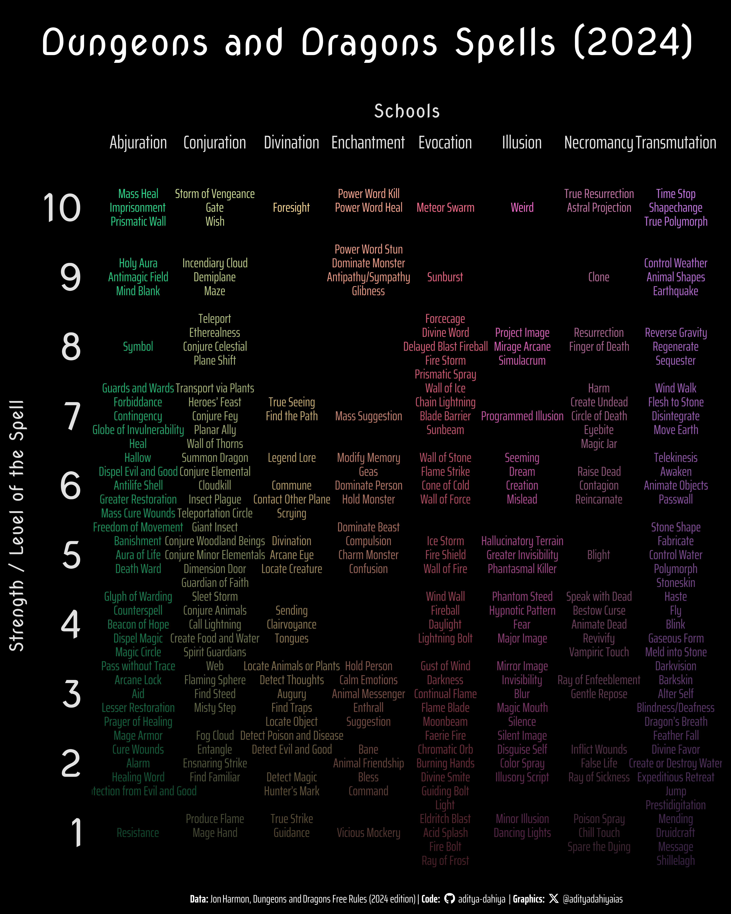

Exploring schools and names of magical spells from the Dungeons and Dragons Free Rules (2024 edition)
…………………………………
#TidyTuesday
Author
Aditya Dahiya
Published
December 17, 2024
About the Data
The Dungeons and Dragons Spells (2024) dataset explores magical spells from the Dungeons and Dragons Free Rules (2024 edition). Curated by Jon Harmon, it provides details on each spell, including level, school of magic, casting requirements, duration, and more.
The dataset is accessible via the tidytuesdayR package or directly from the TidyTuesday GitHub repository. It offers opportunities to analyze class-specific spellcasting options, concentration requirements, and patterns in descriptions, while encouraging practice with tools like Shiny or the tidyverse.

Figure 1: ……………………………………………………..
How I made this graphic?
Loading required libraries, data import & creating custom functions.
Code
# Data Import and Wrangling Toolslibrary(tidyverse) # All things tidy# Final plot toolslibrary(scales) # Nice Scales for ggplot2library(fontawesome) # Icons display in ggplot2library(ggtext) # Markdown text support for ggplot2library(showtext) # Display fonts in ggplot2library(colorspace) # Lighten and Darken colourslibrary(patchwork) # Compiling Plotsspells <- readr::read_csv('https://raw.githubusercontent.com/rfordatascience/tidytuesday/main/data/2024/2024-12-17/spells.csv') |> janitor::clean_names()
Visualization Parameters
Code
# Font for titlesfont_add_google("Imperial Script",family ="title_font") # Font for the captionfont_add_google("Saira Extra Condensed",family ="caption_font") # Font for plot textfont_add_google("Saira Semi Condensed",family ="body_font") # Font for Wordcloudfont_add_google("Cookie",family ="wordcloud_font") mypal <-c("#990099", "#009900")showtext_auto()# A base Colourbg_col <-"white"seecolor::print_color(bg_col)panel_col <-lighten("#FCAADEFF", 0.8)seecolor::print_color(panel_col)# Colour for highlighted texttext_hil <-"#7F0038FF"seecolor::print_color(text_hil)# Colour for the texttext_col <-darken("#7F0038FF", 0.5)seecolor::print_color(text_col)# Define Base Text Sizebts <-90# Caption stuff for the plotsysfonts::font_add(family ="Font Awesome 6 Brands",regular = here::here("docs", "Font Awesome 6 Brands-Regular-400.otf"))github <-""github_username <-"aditya-dahiya"xtwitter <-""xtwitter_username <-"@adityadahiyaias"social_caption_1 <- glue::glue("<span style='font-family:\"Font Awesome 6 Brands\";'>{github};</span> <span style='color: {text_hil}'>{github_username} </span>")social_caption_2 <- glue::glue("<span style='font-family:\"Font Awesome 6 Brands\";'>{xtwitter};</span> <span style='color: {text_hil}'>{xtwitter_username}</span>")plot_caption <-paste0("**Data:** parfumo.com, Olga Gavrik", " | **Code:** ", social_caption_1, " | **Graphics:** ", social_caption_2 )rm(github, github_username, xtwitter, xtwitter_username, social_caption_1, social_caption_2)# Add text to plot-------------------------------------------------plot_title <-"......................."plot_subtitle <-"................................."
# Saving a thumbnaillibrary(magick)# Saving a thumbnail for the webpageimage_read(here::here("data_vizs", "tidy_dungeons_dragons.png")) |>image_resize(geometry ="x400") |>image_write( here::here("data_vizs", "thumbnails", "tidy_dungeons_dragons.png" ) )
Session Info
Table 1: R Packages and their versions used in the creation of this page and graphics